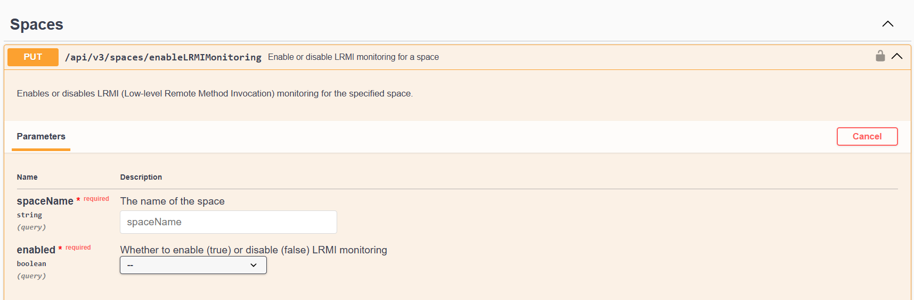
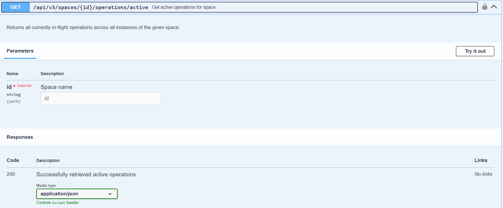
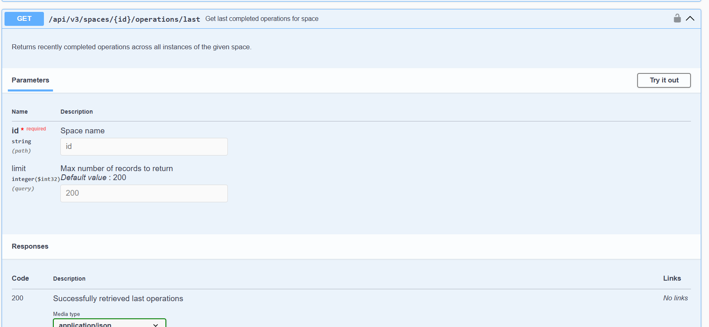
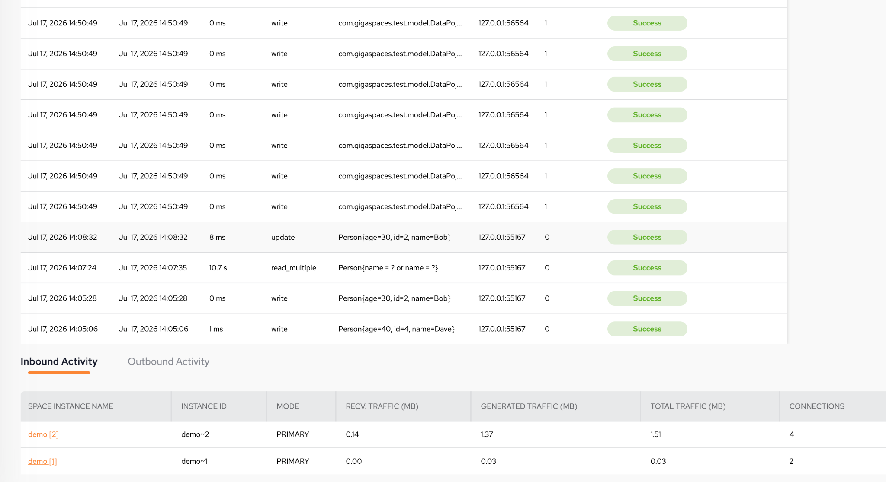

Understand what's currently running in a Space, or see which operations against a Space instance have just finished. This is powered by a lightweight, server-side operations tracker, exposed through the GigaSpace API.
Enable LRMI monitoring on the space via the REST API or via SpaceDeck, and disable it again once troubleshooting is complete. See
| Property | Default |
|---|---|
com.gs.operations.tracker.max-completed
|
200 |
com.gs.operations.tracker.max-active
|
1000 |
PUT /api/v3/spaces/enableLRMIMonitoring

GET /api/v3/spaces/{id}/operations/active

GET /api/v3/spaces/{id}/operations/last


Shows the active operations table and the last completed operations, including the exact query performed and the client IP.
Columns: start date, end date, duration, operation, query, client IP, partition ID, status, and error.
